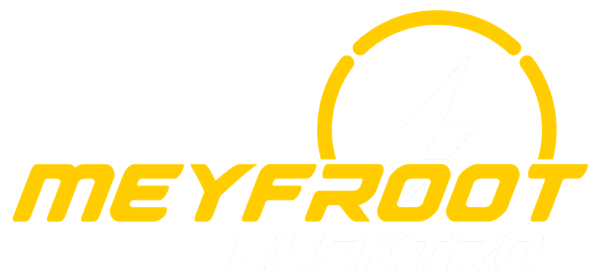

Zonnepanelen op hellend dakVerzorgde plaatsing, optimaal afgestemd op het beschikbare dakoppervlak en de oriëntatie.

0474 60 97 97Offerte aanvragenEen zonne-installatie wordt afgestemd op uw dak, verbruik en toekomstige energiebehoefte. We bekijken ook de combinatie met een hybride omvormer, batterij of laadpaal.
Een zonne-installatie wordt afgestemd op uw dak, oriëntatie, verbruik en toekomstplannen. Zo is uw installatie meteen klaar voor een thuisbatterij, laadpaal of warmtepomp.
U hebt rechtstreeks contact met uw installateur, van advies en offerte tot de uiteindelijke plaatsing.
Een selectie van installaties die we zelf hebben uitgevoerd.